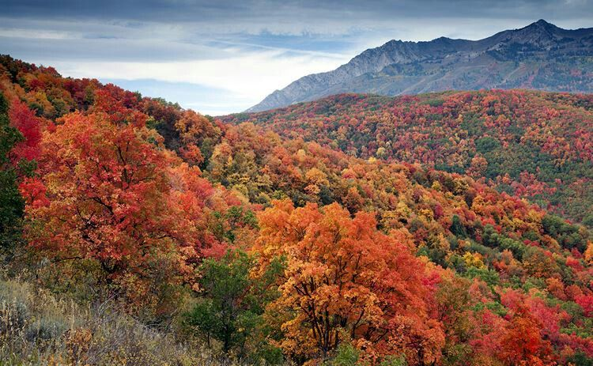

All of the seasons have their beauty and importance, but one has captured my heart more deeply than the others: fall.
Fall is my favorite season for 3 main reasons:
Click each link above to explore each reason more in depth. Perhaps you may fall more in love with fall.